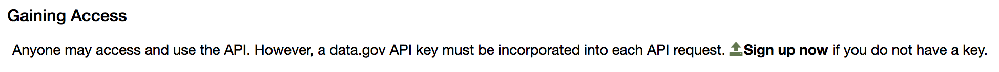
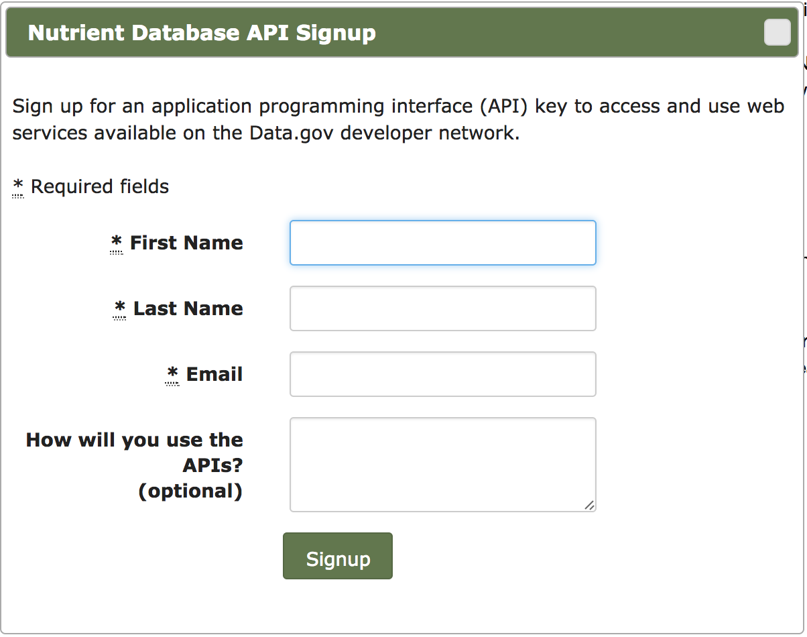

API Key
Let's get a Key
An API key is a code passed in that identifies the calling program / user. They help to keep track of who is accessing the API and if necessary, limit the number of calls allowed or even block a key if malicious activity is suspected. An API key is unique to each user and similar to a social security number should be protected. Luckily the process for obtaining a key is fairly simple. See below for a list of step:
- Head to the USDA Food Composition Databases Website
Click on the Documentation and Help tab and the Food Composition Databases API link

Scroll down to the Gaining Access section and click on the Sign Up Now Link
This will bring up signup window. Fill out the information, click the Signup button, and within a couple of minutes you should receive an e-mail with your key. This key will give you access to not only the FDA database, but the databases of many other government agencies.
You're key should look similar to the following:
API key = zuxfu4box97q9Q9qtlvw6kjzttpgbtj00dogv8hy
Our First Call
Follow the Below Link to Learn How to Make a Call to the API